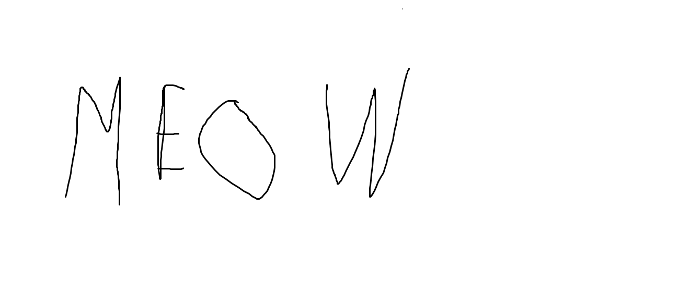

Info
Ma õpin TTHKs, minu hobby on programeerimine
Pildid

Programeerimine
lisa suvalist IT teksti
Ülesanne 1. Kasuta erinevad HTML formaatid (10tk) ja katseta lisatud tekstiil
Esimese põlvkonna programmeerimiskeelteks nimetatakse masinkoodi keeli.Masinkood koosneb käskudest, mida arvuti (protsessor) täita oskab
( ning nende käskude juurde kuuluvatest andmetest).
Niisiis on masinkood väga tugevasti seotud riistvaraga, mille peal vastav programm tööle hakkab Masinkood ei ole tänapäeva .
Teise põlvkonna programmeerimiskeeled on assembler-keeled- C - nimi tuleneb sellest, et keel baseerus paljuski B nimelisel programmeerimiskeelel, loodi operatsioonisüsteemide kirjutamiseks (paljud Unixi -laadsed operatsioonisüsteemid on enamikus kirjutatud C keeles), pikka aega üks populaarsemaid programmeerimiskeeli.
- C++ - objektorienteeritud C.
- Java - C++ põhjal arendatud programmeerimiskeel
- C# - kõik kolmanda põlvkonna programmeerimiskeeled
Ülesanne 2. Lisa 3 erinevat stiili erineva section elementidele